Doubt and Fear of Programming
Programming is very hard, isn't it
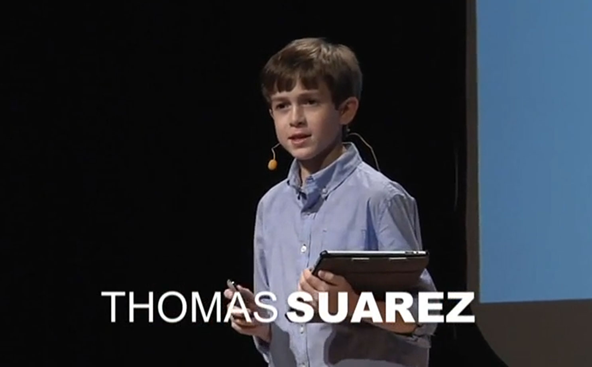Most 12-year-olds love playing videogames — but Thomas Suarez taught himself how to create them. After developing iPhone apps like "Bustin Jeiber," a whack-a-mole game, he is now using his skills to help other kids become developers.
(TED Talk)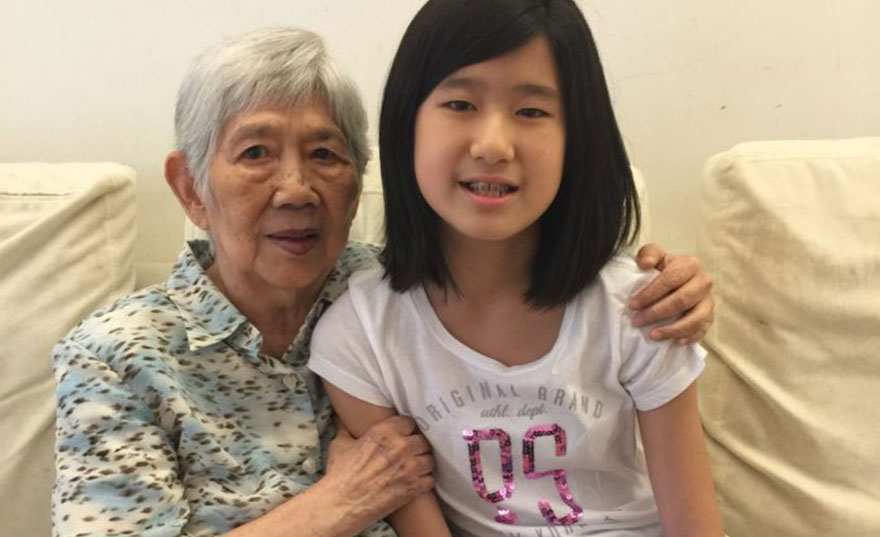“My idea is simple,” Emma Yang says, “An app that helps Alzheimer’s patients recognize their loved ones, remember events, and stay connected and engaged with the people around them.”
Timeless App Demo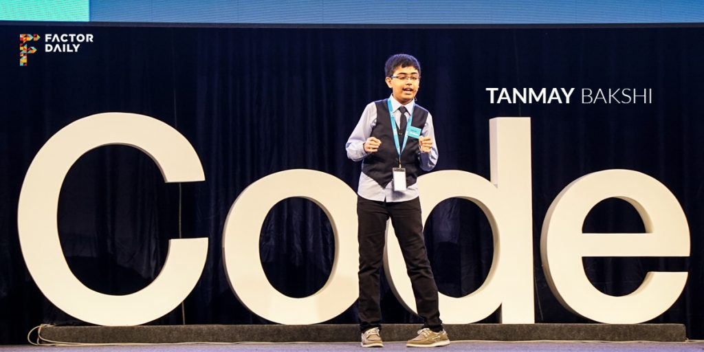“Coding is like a break time for me, when I have nothing to do, I just code,” he says. It’s almost as if Tanmay uses coding as his primary language of expression.
“My dad was a computer programmer and since he would code a lot, it kind of intrigued me how computers could display things like ‘hello world’ and even my name. As a five-year-old, I thought it was magic and I wanted to know how it’s done, and get to the depth of it.”
Don't Fear Programming
Because Programming is very very easy
Programming is very very easy, so
Why I can't do it
English
and
Programming language
Teaching methods are
too formal
less natural
Fear of making mistakes
Because you don't know how to fix
[How we learn programming]
- Natural Approach
- Learn by doing
What programming language we should learn?
[How we learn a foreign language]
- Don't jus try to remember words, syntaxes
- Because language is culture
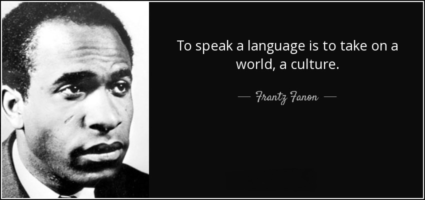So, we don't use any programming language
Because we only learn how to code (write programs)
Just learn how to think like a computer
So, you can use any programming language
[Course goals]
- To think like a computer
- Computational thinking
[How we learn]
- Natural Approach
- Learn by doing
Don't fear programming
Ok, Let go
How to make it
heatPan
addOil
addIngredients
flipBack
How to make it
Notes
getOnion;
getEggs;
getSauce;
getFryingOil;
chopOnion;
beatEgg;
mixEgg;
mixEggOnionSauce;
heatPan;
addOil;
addIngredients;
flipBack;
How to make it
Notes
getOnion;
getEggs;
getSauce;
getFryingOil;
chopOnion;
beatEgg;
mixEgg;
mixEggOnionSauce;
heatPan;
addOil;
addIngredients;
flipBack;
Program (cooking recipe)
Statement;
Statement;
Statement;
Statement;
Statement;
Statement;
Statement;
Statement;
Statement;
Statement;
Statement;
Statement;
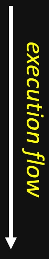
So, What we learnt
- What is a program?
- What is a statement?
- How to execute a program? (normal flow)
But you write this program just for yourself
But we want to write programs which
can be executed by computer
Computer Programs are programs which can be executed by computers
Computer Programming (programming) is writing computer programs.
Computer, What is
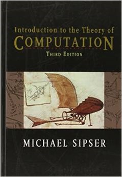
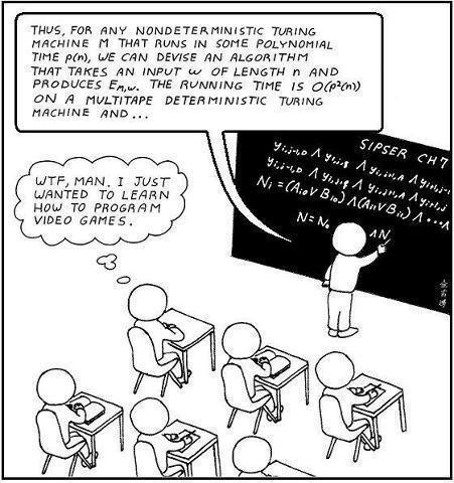Computer, What is
Computer = Stupid + Power
A computer program is a sequence of instructions
is a sequence of 0 and 1
What is programming language
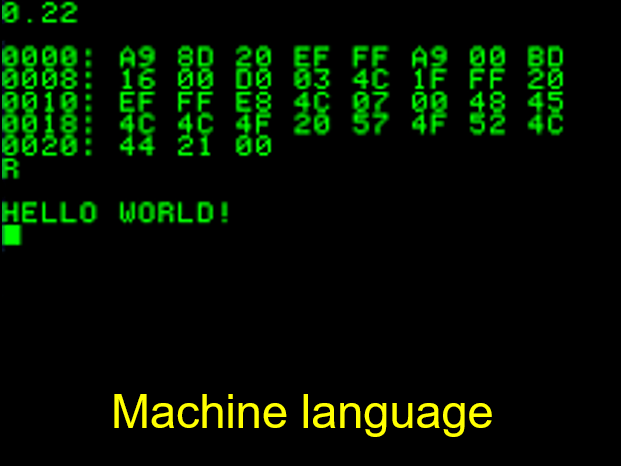 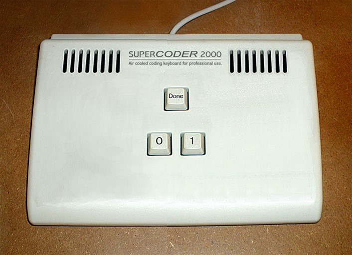
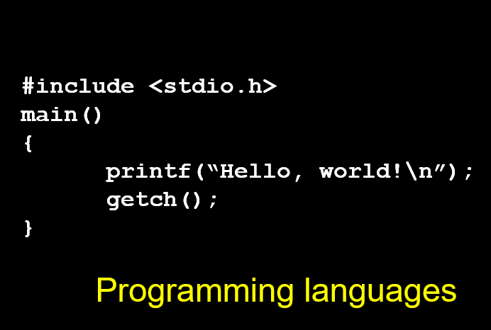What programming language, we should learn
We don't learn programming language
Because, in my opinion, Machine Language and Programming Languages both are too complex for beginners
We learn Simpson Language
(and write Simpson code)
Simpson Language: tienBuoc() | daoKimCuong()
Simpson want to find and get a diamond.
Simpson Language: tienBuoc() | daoKimCuong()
Simpson want to find and get two diamonds.
Simpson Language: tienBuoc() | daoKimCuong() | quayTrai() | quayPhai()
Simpson want to find and get 3 diamonds.
Simpson Language: tienBuoc() | daoKimCuong() | quayTrai() | quayPhai()
Syntax Errors: Find and Fix errors in the program
Simpson Language: tienBuoc() | daoKimCuong() | quayTrai() | quayPhai()
Syntax Errors: Find and Fix errors in the program
What is Case-sensitive?
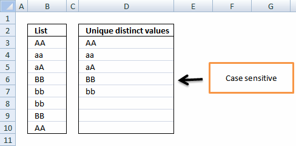Logical Error: Program produces an undesired output.
Logical Error: Program produces undesired behaviors (exceptions).
Code for six minutes
Debug for six hours
My code doesn't work. I have no idea Why
After debugging
My code works. I have no idea Why
Simpson wants to collect 3 diamonds.
Write a program to help Simpson.
Simpson wants to collect 3 diamonds.
Write a program to help Simpson.
Simpson wants to collect 4 diamonds.
Write a program to help Simpson.